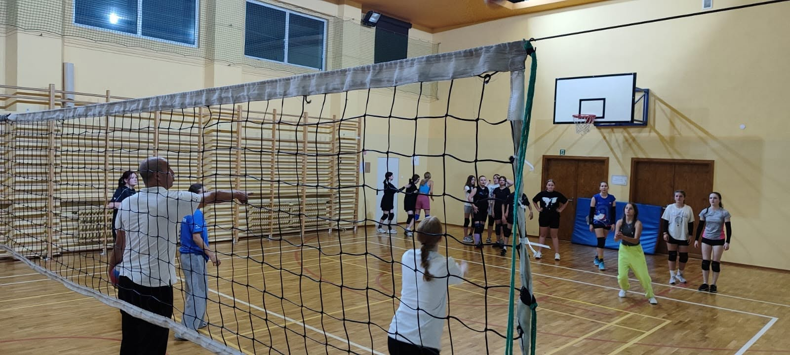

Technika
Nauka odbicia sposobem górnym i dolnym, prawidłowej pracy nóg, ustawienia rąk oraz kontroli piłki w prostych i dynamicznych ćwiczeniach.

Siatkówka
Strona poświęcona treningom siatkówki, rozwojowi zawodników oraz przygotowaniu do meczów, turniejów i wspólnej pracy na boisku.
O dyscyplinie
Siatkówka rozwija szybkość reakcji, koordynację, komunikację i współpracę. Na treningach zawodnicy uczą się podstaw technicznych, ustawienia na boisku, odpowiedzialności za zespół oraz pewności w grze.
Nauka odbicia sposobem górnym i dolnym, prawidłowej pracy nóg, ustawienia rąk oraz kontroli piłki w prostych i dynamicznych ćwiczeniach.
Ćwiczenia celności, rytmu zagrywki i stabilnego przyjęcia. To elementy, które pozwalają spokojnie rozpocząć akcję i utrzymać kontrolę nad grą.
Rozwijanie wyskoku, timingu, kierunku ataku i współpracy pod siatką. Zawodnicy uczą się podejmowania szybkich decyzji w akcji.
Miejsce na informacje o sparingach, turniejach, wynikach oraz planach startowych sekcji siatkówki w nadchodzącym sezonie.
Dołącz do drużyny
Tutaj możesz dopisać informacje o wieku zawodników, terminach treningów, miejscu zajęć oraz kontakcie do trenera.
Kontakt